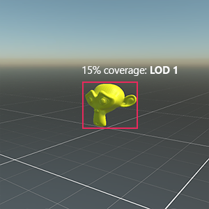

Level of Detail (LOD) for models

The Level of detail (LOD) is a technique which reduces the number of GPU operations that Evergine requires to render distant models.
This technique allows Evergine to reduce the model complexity it renders for an Entity based on its distance from the camera. It is possible to configure LOD levels in your external 3D modeling application and Evergine automatically creates and configures the required Entity and components for you when you drag&drop the model into a scene.
The representation inside the hierarchy tree will be a parent entity with one child entity for every LOD defined level. The parent entity must be contained in a LODGroup component which allows you to configure all the parameters to correctly render this model depending on the distance to the camera and each child will have a LODEntry component with the information required by the LODGroup to define each level.
LOD Levels
A LOD level in a model defines which meshes (or materials) Evergine will render that model. LOD Levels are identified by an index, where Level 0 is the most detailed level.
LOD selection
Evergine select a LOD Level of a model depending on the area covered by this model in the camera. Examples:
- If the model is too close to the camera, we select the lowest LOD (more details). In that case, the model cover the 80% of the screen:

- If the model is far away, it appears smaller, and because of this, Evergine will select highest LOD levels. In that case LOD 1 is selected because the model is now at 15% of screen coverage:

Here is the same example in movement:
LOD Components
To setup LOD in your entities, you need to use LODGroup and LODEntry components.
LODGroup
The LODGroup component manages the Level of Detail of the owner's entity.
It will collect all LODEntry components defined in the entity hierarchy to conform the meshes assigned to each LOD Levels. They will calculate the screen coverage of the meshes in the camera, and select the properly level accordingly.

| Property | Default | Description |
|---|---|---|
| LOD Levels | 0.25, 12.5, 6.25, ... | Indicates the minimum screen coverage required per each LOD Level (for example, by default LOD 0 requires that the entity covers at least 25% of the screen). |
| LOD Bias | 1 | This property is used as a factor to the calculated screen coverage. This will be used to increase or reduce the overall LOD levels. For example, a LOD Bias of 0.5 cause that a model with a screen coverage of 40% is processed as 20%. In general terms, values lower than 1 tend to incrase the LOD levels, and values greater than 1 will produce of lower LOD levels. |
LODEntry
You need to add a LODEntry component to assign a LOD level to a specified entity with a Mesh. This component requires a MeshRenderer component, which will enable or disable depending the overal LOD Level.
By default, when a LOD Level is selected, it will enable all LODEntry MeshRenderer associated components, and they will disable the others LODEntry MeshRenderers.

| Property | Default | Description |
|---|---|---|
| LOD | 0 | Indicates the LOD Level assigned to this entity |
| DisableEntity | false | If this value is true, it will disable or enable the entire Entity, instead of only enable or disable the MeshRenderer. |
Importing LOD Models
You can create models with different levels of details in an external 3D application for use Evergine's LOD system. If you name these meshes (and nodes) correctly, Evergine automatically creates and configures an Entity with LODGroup and LODEntry components for them when it imports the Model.
To import a Model with LOD level into Evergine, you must do the following:
- In your external 3D application (Blender for example), follow the application's process to create as many LOD meshes as you need.
- Name the meshes according to the following naming convention:
- ExampleMeshName_LOD0 for the first LOD level (the most detailed version)
- ExampleMeshName_LOD1
- ExampleMeshName_LOD2
- Export your Model as a compatible Evergine model format (
.glbor.fbxfor example) - Import the model into Evergine. Evergine recognizes the grouped Meshes and naming convention, and automatically creates
LODGroupandLODEntrycomponents when the model is instantiated in the scene.
This is an example of a model in Blender with 4 LOD Level defined: